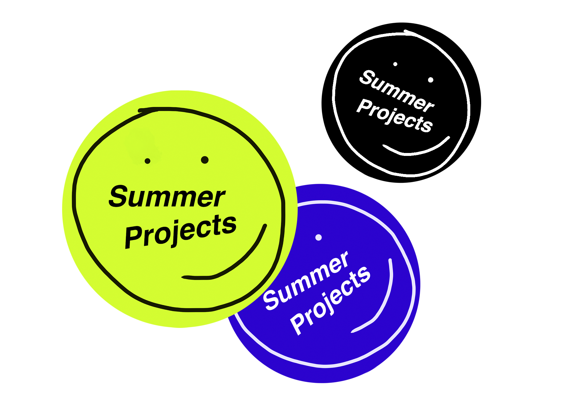
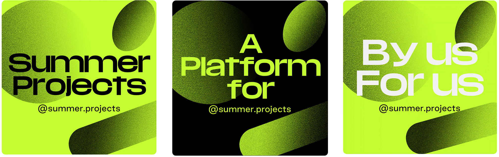
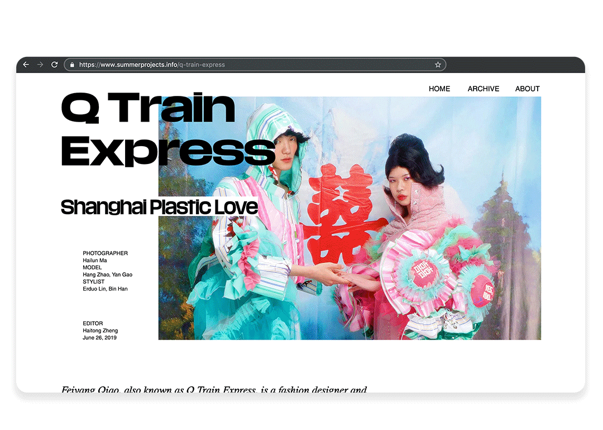
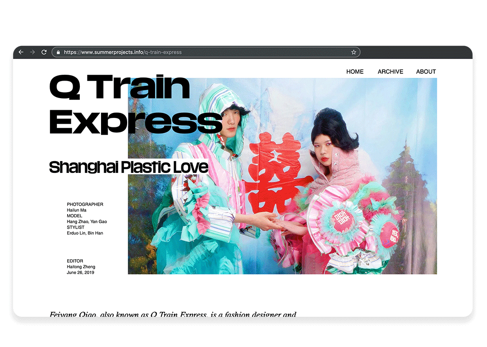

SUMMER PROJECTS
A platform for young creatives, by young creatives.
2019-now Media, Branding

In the summer 2019 I founded Summer Projects (ins:@summerprojects) with two other fresh grads from Parsons School of Design Terrence Zhou and Mari Al-Midhadi in New York. Sensing the lack of resources and publicity, as well as the want of support, uplift and connection, we built this space specifically for young designers and artists to share their stories and moving creative process.

By choosing a relevant theme every month, we touch on powerful topics through multiple in-depth interviews with young creatives. 
Screenshots from the main campaign video series
June & July 2019 campaign videos
Think Humans of New York meets design.
 Link to the Summer Projects official website.

Link to the Summer Projects official website.
